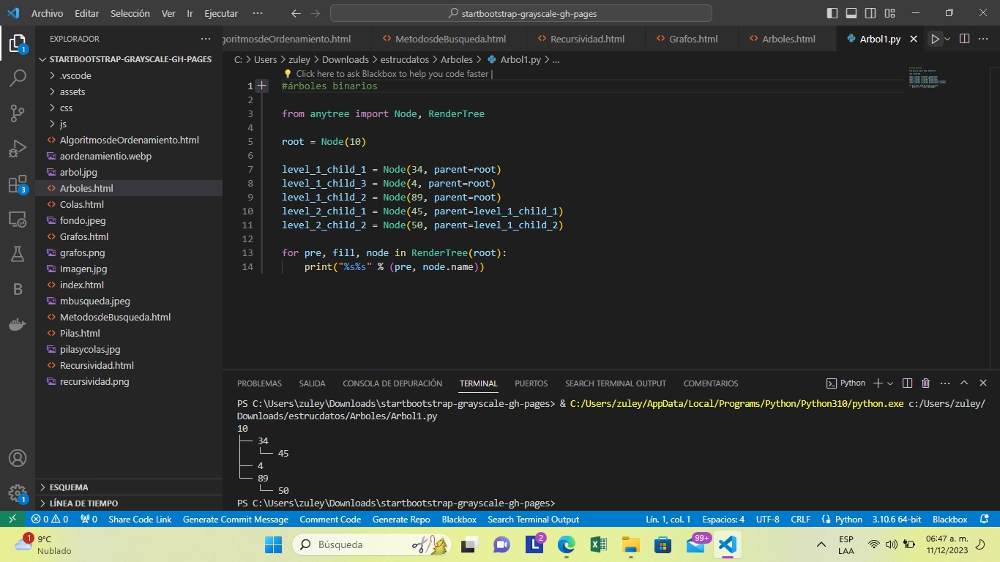
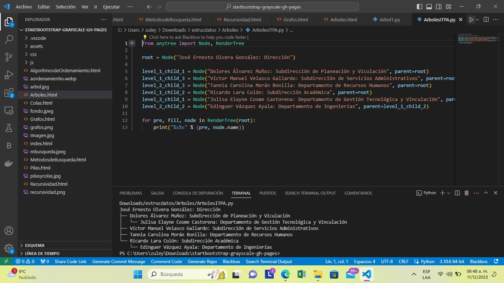
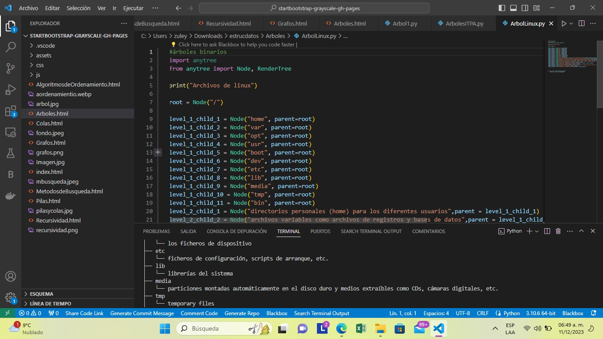

<!DOCTYPE html>
<html lang="en">
<head>
  <meta charset="UTF-8">
  <meta name="viewport" content="width=device-width, initial-scale=1.0">
  <title>Arboles</title>
</head>
<body>

</body>
</html>
<div>
  <p class="h6">En programación, los árboles son estructuras de datos fundamentales. Algunos conceptos clave incluyen:</p>
  <p class="h6"> <ul>
    <li> 1. *Jerarquía:* Los árboles son estructuras jerárquicas con un nodo raíz y nodos secundarios, llamados hijos, que se ramifican a partir de él.</li> 

    <li> 2. *Nodos:* Cada elemento en un árbol se llama nodo, y puede tener nodos hijos y un nodo padre, excepto el nodo raíz que no tiene un padre.</li>
    
      <li>3. *Nodo hoja:* Los nodos sin hijos se llaman nodos hoja.
    
        <li> 4. *Altura:* La altura de un árbol es la longitud del camino más largo desde la raíz hasta una hoja. La profundidad de un nodo es la longitud del camino desde la raíz hasta ese nodo.</li>
    
          <li> 5. *Subárbol:* Un subárbol es un conjunto de nodos y arcos formados por un nodo y todos sus descendientes.</li>
    
            <li>6. *Recorridos:* Puedes recorrer un árbol de diversas maneras, como preorden, postorden e inorden, cada una con un patrón específico para visitar los nodos.</li>
    
              <li>7. *Árbol binario:* Un árbol binario es un tipo común donde cada nodo tiene a lo sumo dos hijos.</li>
    
                <li> 8. *Árbol balanceado:* Un árbol se considera balanceado cuando la diferencia de altura entre sus subárboles izquierdo y derecho es pequeña, evitando así situaciones extremas y mejorando el rendimiento.</li>
    
                  <li>9. *Árbol de búsqueda binaria (BST):* Un tipo especial de árbol binario en el que para cada nodo, los valores en el subárbol izquierdo son menores y los del subárbol derecho son mayores.</li>
    
                    <li>10. *Operaciones comunes:* Insertar, buscar y eliminar son operaciones típicas en árboles, especialmente en árboles de búsqueda binaria.</li></p>
  </ul>
  <div class="w-25">
      
  </div>
  <p class="h6">Comprender estos conceptos es esencial para aprovechar al máximo las estructuras de árbol en programación.</p>
</div>
          <h6 class="card-subtitle mb-2 text-body-secondary">Imagenes</h6>
          <div id="carouselExampleControls" class="carousel slide" data-bs-ride="carousel">
            <div class="carousel-inner">
              <div class="carousel-item active" data-bs-interval="3000">
                
              </div>

              <div class="carousel-item" data-bs-interval="3000">
                
              </div>

              <div class="carousel-item" data-bs-interval="3000">
                
              </div>

            </div>
            <button class="carousel-control-prev" type="button" data-bs-target="#carouselExampleControls" data-bs-slide="prev">
              <span class="carousel-control-prev-icon" aria-hidden="true"></span>
              <span class="visually-hidden">anterior</span>
            </button>
            <button class="carousel-control-next" type="button" data-bs-target="#carouselExampleControls" data-bs-slide="next">
              <span class="carousel-control-next-icon" aria-hidden="true"></span>
              <span class="visually-hidden">siguiente</span>
            </button>
          </div>
          <p class="card-text">En las imagenes anteriores tenemos un ejemplo de arboles, que se realizo durante la unidad</p>
          
        </div>
      </div>
  </body>
</html>